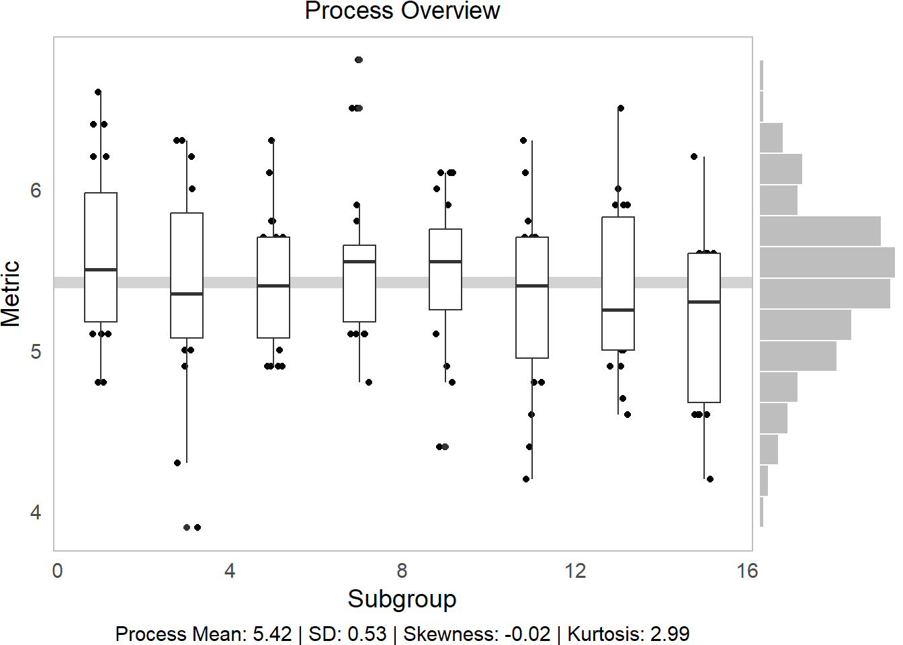
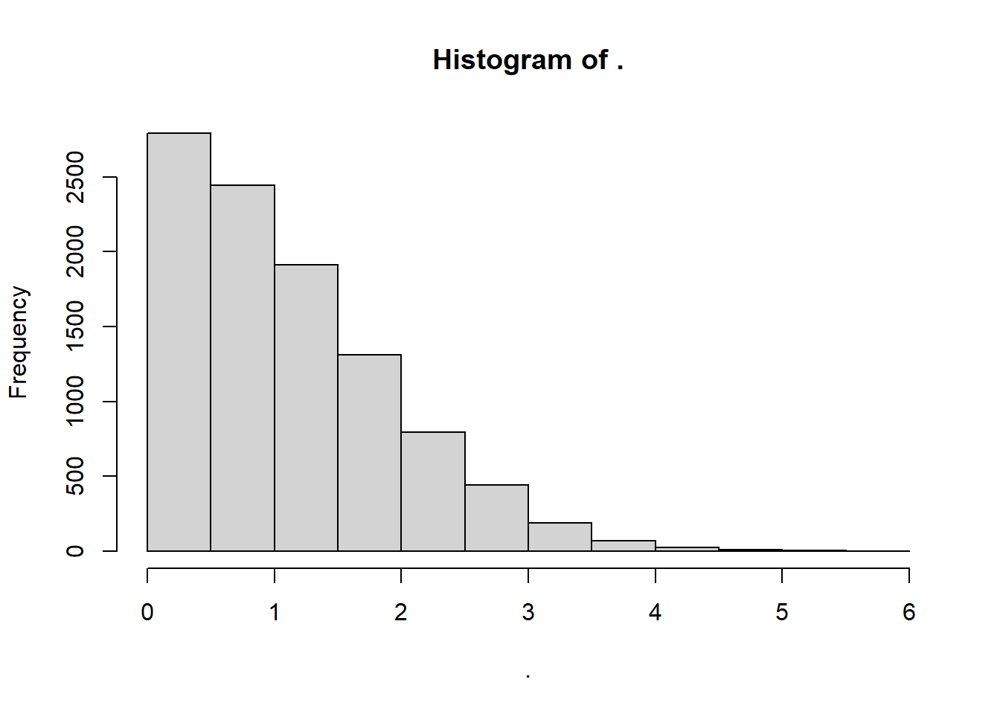
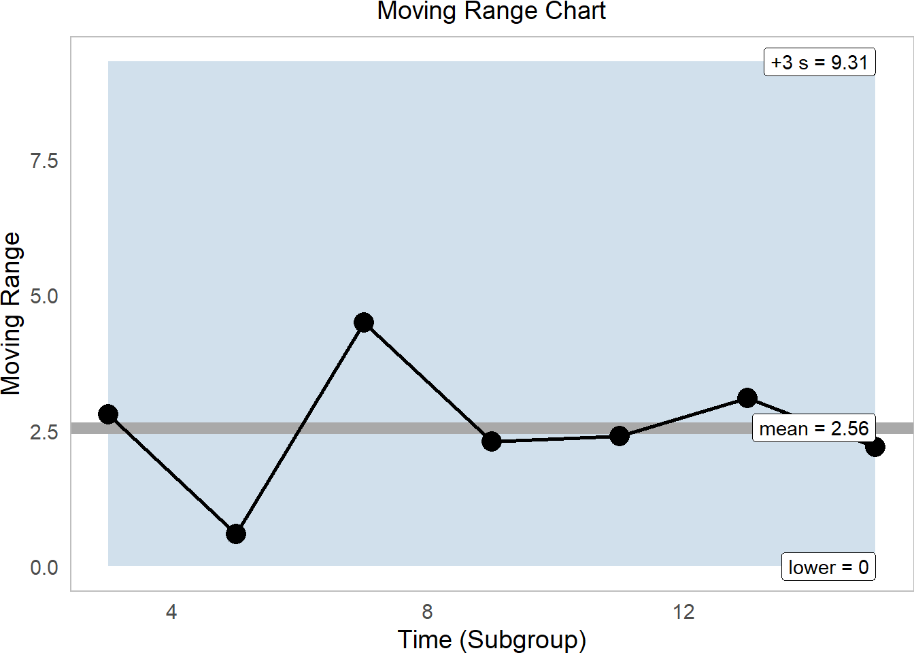

14 Statistical Process Control in R

Figure 2.1: Statistical Process Control!
In this workshop, we will learn how to perform statistical process control in R, using statistical tools and ggplot visualizations! Statistical Process Control refers to using statistics to (1) measure variation in product quality over time and (2) identify benchmarks to know when intervention is needed. Let’s get started!
Getting Started
Packages
We’ll be using the tidyverse package for visualization, viridis for color palletes, moments for descriptive statistics, plus ggpubr for some add-on functions in ggplot.
library(tidyverse)
library(viridis)
# you'll probably need to install these packages!
# install.packages(c("ggpubr", "moments"))
library(ggpubr)
library(moments)
Our Case
](https://static.wixstatic.com/media/e8dc42_9cf1b5c0e5664ebd96581ffa8891eae2~mv2_d_1960_1200_s_2.jpg/v1/fill/w_1225,h_819,al_c,q_85,usm_0.66_1.00_0.01,enc_auto/DSC00255-1-3_JPG.jpg)
Figure 4.1: Obanazawa City, Yamagata Prefecture - A Hot Springs Economy. Photo credit and more here.
For today’s workshop, we’re going to think about why quality control matters in a local economy, by examining the case of the Japanese Hot Springs bath economy! Hot springs, or onsen, are a major source of tourism and recreation for families in Japan, bringing residents from across the country every year to often rural communities where the right geological conditions have brought on naturally occurring hot springs. Restaurants, taxi and bus companies, and many service sector firms rely on their local onsen to bring in a steady stream (pun intended) of tourists to the local economy. So, it’s often in the best interest of onsen operators to keep an eye on the temperature, minerals, or other aspects of their hot springs baths to ensure quality control, to keep up their firm (and town’s!) reputation for quality rest and relaxation!
Onsen-goers often seek out specific types of hot springs, so it’s important for an onsen to actually provide what it advertises! Serbulea and Payyappallimana (2012) describe some of these benchmarks.
Temperature: Onsen are divided into “Extra Hot Springs” (
>42 degreesC), “Hot Springs” (41~34 degreesC), and “Warm Springs” (33~25 degreesC).pH: Onsen are classified into “Acidic” (
pH < 3), “Mildly Acidic” (pH 3~6), “Neutral” (pH 6~7.5), “Mildly alkaline” (ph 7.5~8.5), and “Aklaline” (pH > 8.5).Sulfur: Sulfur onsen typically have about 2mg of sulfur per 1kg of hot spring water; sulfur levels must exceed 1 mg to count as a Sulfur onsen. (It smells like rotten eggs!)
These are decent examples of quality control metrics that onsen operators might want to keep tabs on!
Figure 14.1: Monkeys are even fans of onsen! Read more here!
Our Data
You’ve been hired to evaluate quality control at a local onsen in sunny Kagoshima prefecture! Every month, for 15 months, you systematically took 20 random samples of hot spring water and recorded its temperature, pH, and sulfur levels. How might you determine if this onsen is at risk of slipping out of one sector of the market (eg. Extra Hot!) and into another (just normal Hot Springs?).
Let’s read in our data from workshops/onsen.csv!
# Let's import our samples of bathwater over time!
water = read_csv("workshops/onsen.csv")
# Take a peek!
water %>% glimpse()## Rows: 160
## Columns: 5
## $ id <dbl> 1, 2, 3, 4, 5, 6, 7, 8, 9, 10, 11, 12, 13, 14, 15, 16, 17, 18, …
## $ time <dbl> 1, 1, 1, 1, 1, 1, 1, 1, 1, 1, 1, 1, 1, 1, 1, 1, 1, 1, 1, 1, 3, …
## $ temp <dbl> 43.2, 45.3, 45.5, 43.9, 45.9, 45.0, 42.3, 44.2, 42.2, 43.4, 46.…
## $ ph <dbl> 5.1, 4.8, 6.2, 6.4, 5.1, 5.6, 5.5, 5.3, 5.2, 5.9, 5.8, 5.3, 5.9…
## $ sulfur <dbl> 0.0, 0.4, 0.9, 0.2, 0.0, 0.1, 0.0, 0.0, 0.0, 0.1, 0.7, 1.1, 0.1…Our dataset contains:
id: unique identifer for each sample of onsen water.time: categorical variable describing date of sample (month1, month3, … month15).temp: temperature in celsius.ph: pH (0 to 14)sulfur: milligrams of sulfur ions.
14.1 Visualizing Quality Control
Let’s learn some key techniques for visualizing quality control!
14.1.1 theme_set()
First, when you’re about to make a bunch of ggplot visuals, it can help to set a common theme across them all with theme_set().
# By running theme_set()
theme_set(
# we tell ggplot to give EVERY plot this theme
theme_classic(base_size = 14) +
# With these theme traits, including
theme(
# Putting the legend on the bottom, if applicable
legend.position = "bottom",
# horizontally justify plot subtitle and caption in center
plot.title = element_text(hjust = 0.5),
plot.subtitle = element_text(hjust = 0.5),
plot.caption = element_text(hjust = 0.5),
# Getting rid of busy axis ticks
axis.ticks = element_blank(),
# Getting rid of busy axis lines
axis.line = element_blank(),
# Surrounding the plot in a nice grey border
panel.border = element_rect(fill = NA, color = "grey"),
# Remove the right margin, for easy joining of plots
plot.margin = margin(r = 0)
)
)
14.1.2 Process Descriptive Statistics
First, let’s describe our process, using favorite description statistics. We’re going to want to do this a bunch, so why don’t we just write a function for it? Let’s write describe(), which will take a vector x and calculate the mean(), sd(), skewness(), and kurtosis(), and then paste() together a nice caption describing them.
(I encourage you to write your own functions like this to help expedite your coding! Start simple!)
describe = function(x){
# Put our vector x in a tibble
tibble(x) %>%
# Calculate summary statistics
summarize(
mean = mean(x, na.rm = TRUE),
sd = sd(x, na.rm = TRUE),
# We'll use the moments package for these two
skew = skewness(x, na.rm = TRUE),
kurtosis = kurtosis(x, na.rm = TRUE)) %>%
# Let's add a caption, that compiles all these statistics
mutate(
# We'll paste() the following together
caption = paste(
# Listing the name of each stat, then reporting its value and rounding it, then separating with " | "
"Process Mean: ", mean %>% round(2), " | ",
"SD: ", sd %>% round(2), " | ",
"Skewness: ", skew %>% round(2), " | ",
"Kurtosis: ", kurtosis %>% round(2),
# Then make sure no extra spaces separate each item
sep = "")) %>%
return()
}
# Run descriptives!
tab = water$temp %>% describe()
# Check it out!
tab## # A tibble: 1 × 5
## mean sd skew kurtosis caption
## <dbl> <dbl> <dbl> <dbl> <chr>
## 1 44.8 1.99 0.0849 3.62 Process Mean: 44.85 | SD: 1.99 | Skewness: 0.08 |…
14.1.3 Process Overview Visual
Your first step should always be to look at the data overall! geom_jitter(), geom_boxplot(), and ggMarginal() can help you do this.
geom_jitter()is a jittered scatterplot, jittering points a little to help with visibility. Since we want to be really precise on our quality control metrics, we could jitter the width a little (width = 0.25), but hold the y-axis (quality metric) constant atheight = 0. These are in your x and y axis units, so decide based on your data each time.geom_boxplot()makes a boxplot for eachgroup(time) in our data, showing the interquartile range (25th, 50th, and 75th percentiles) of ouryvariable for eachgroup. Helpful way to view distributions. (Alternatively, you can trygeom_violin(), which works the same way.)geom_hline()makes a horizontal line at theyintercept; we can tell it to show themean()ofy(in this case,temp).geom_histogram()is a histogram! We can usecoord_flip()to turn it vertical to match they-axis.ggarrange()from theggpubrpackage binds two plots together into one, giving each a specific proportionalwidth(eg.c(0.25, 0.75)percent, orc(5, 1)would be 5/6 and 1/6.)
# Make the initial boxplot...
g1 = water %>%
ggplot(mapping = aes(x = time, y = temp, group = time)) +
# Plot grand mean
geom_hline(mapping = aes(yintercept = mean(temp)), color = "lightgrey", size = 3) +
# Plot points and boxplots
geom_jitter(height = 0, width = 0.25) +
geom_boxplot() +
labs(x = "Time (Subgroup)", y = "Temperature (Celsius)",
subtitle = "Process Overview",
# Add our descriptive stats in the caption!
caption = tab$caption)
# Part 1 of plot
g1
# Make the histogram, but tilt it on its side
g2 = water %>%
ggplot(mapping = aes(x = temp)) +
geom_histogram(bins = 15, color = "white", fill = "grey") +
theme_void() + # Clear the them
coord_flip() # tilt on its side
# Part 2 of plot
g2
# Then bind them together into 1 plot, 'h'orizontally aligned.
p1 = ggarrange(g1,g2, widths = c(5,1), align = "h")
# Check it out!
p1
We can tell from this visual several things!
Side Histogram: Our overall distribution is pretty centered.
Descriptive Statistics: Our distribution has little skew (~0) and has slightly higher-than-average kurtosis (<3) (very centered) (Review Skewness and Kurtosis here.)
Line vs. Boxplots: Over time, our samples sure do seem to be getting slightly further from the mean!
Learning Check 1
Question
We analyzed temperature variation above, but our hot springs owner wants to know about variation in pH too! Write a function to produce a process overview plot given any 2 vectors (water$time and water$pH, in this case), and visualize the process overview for pH! (You can do it!)
[View Answer!]
ggprocess = function(x, y, xlab = "Subgroup", ylab = "Metric"){
# Get descriptive statistics
tab = describe(y)
# Make the initial boxplot...
g1 = ggplot(mapping = aes(x = x, y = y, group = x)) +
# Plot grand mean
geom_hline(mapping = aes(yintercept = mean(y)), color = "lightgrey", size = 3) +
# Plot points and boxplots
geom_jitter(height = 0, width = 0.25) +
geom_boxplot() +
labs(x = xlab, y = ylab,
subtitle = "Process Overview",
# Add our descriptive stats in the caption!
caption = tab$caption)
# Make the histogram, but tilt it on its side
g2 = ggplot(mapping = aes(x = y)) +
geom_histogram(bins = 15, color = "white", fill = "grey") +
theme_void() + # Clear the them
coord_flip() # tilt on its side
# Then bind them together into 1 plot, 'h'orizontally aligned.
p1 = ggarrange(g1,g2, widths = c(5,1), align = "h")
return(p1)
}
# Visualize it!
ggprocess(x = water$time, y = water$ph)
In comparison to temp, pH is a much more controlled process.
I encourage you to use this ggprocess() function you just created!
14.2 Average and Standard Deviation Graphs
14.2.1 Key Statistics
Next, to analyze these processes more in depth, we need to assemble statistics at 2 levels:
within-group statistics measure quantities of interest within each subgroup (eg. each monthly slice
timein our onsen data).between-group statistics measure total quantities of interest for the overall process (eg. the overall “grand” mean, overall standard deviation in our onsen data).
14.2.2 Subgroup (Within-Group) Statistics
Let’s apply these to our onsen data to get statistics describing each subgroup’s distribution, a.k.a. short-term or within-group statistics.
# Calculate short-term statistics within each group
stat_s = water %>%
# For each timestpe
group_by(time) %>%
# Calculate these statistics of interest!
summarize(
# within-group mean
xbar = mean(temp),
# within-group range
r = max(temp) - min(temp),
# within-group standard deviation
sd = sd(temp),
# within-group sample size
nw = n(),
# Degrees of freedom within groups
df = nw - 1) %>%
# Last, we'll calculate sigma_short (within-group variance)
# We're going to calculate the short-term variation parameter sigma_s (sigma_short)
# by taking the square root of the average of the standard deviation
# Essentially, we're weakening the impact of any special cause variation
# so that our sigma is mostly representative of common cause (within-group) variation
mutate(
# these are equivalent
sigma_s = sqrt( sum(df * sd^2) / sum(df) ),
sigma_s = sqrt(mean(sd^2)),
# And get standard error (in a way that retains each subgroup's sample size!)
se = sigma_s / sqrt(nw),
# Calculate 6-sigma control limits!
upper = mean(xbar) + 3*se,
lower = mean(xbar) - 3*se)
# Check it!
stat_s %>% head(3)## # A tibble: 3 × 10
## time xbar r sd nw df sigma_s se upper lower
## <dbl> <dbl> <dbl> <dbl> <int> <dbl> <dbl> <dbl> <dbl> <dbl>
## 1 1 44.6 4.20 1.34 20 19 1.99 0.444 46.2 43.5
## 2 3 45.3 7.9 2.00 20 19 1.99 0.444 46.2 43.5
## 3 5 44.8 5.90 1.63 20 19 1.99 0.444 46.2 43.5
14.2.3 Total Statistics (Between Groups)
# To get between-group estimates....
stat_t = stat_s %>%
summarize(
xbbar = mean(xbar),
rbar = mean(r),
sdbar = mean(sd),
# We can also recalculate sigma_short here too
sigma_s = sqrt( mean(sd^2) ),
# Or we can calculate overall standard deviation
sigma_t = sd(water$temp) )
So, now that we have estimated within-group, common cause variation via \(\sigma_{short}\) (sigma_s) and the standard error (se), what can we say about our process?
14.2.4 Average and Standard Deviation Charts
The preferred method for measuring within-group variability is the standard deviation, rather than the range, so we generally recommend (a) Average (\(\bar{X}\)) and Standard Deviation (\(S\)) charts over (b) Average (\(\bar{X}\)) and Range (\(R\)) charts.
# Let's extract some labels
labels = stat_s %>%
summarize(
time = max(time),
type = c("xbbar", "upper", "lower"),
name = c("mean", "+3 s", "-3 s"),
value = c(mean(xbar), unique(upper), unique(lower)),
value = round(value, 2),
text = paste(name, value, sep = " = "))
stat_s %>%
ggplot(mapping = aes(x = time, y = xbar)) +
geom_hline(mapping = aes(yintercept = mean(xbar)), color = "lightgrey", size = 3) +
geom_ribbon(mapping = aes(ymin = lower, ymax = upper), fill = "steelblue", alpha = 0.2) +
geom_line(size = 1) +
geom_point(size = 5) +
# Plot labels
geom_label(data = labels, mapping = aes(x = time, y = value, label = text), hjust = 1) +
labs(x = "Time (Subgroups)", y = "Average",
subtitle = "Average and Standard Deviation Chart") This tells us that excitingly, our onsen temperatures are quite firmly within range. While the average varies quite a bit, it remains comfortably within 3 standard deviations of the mean.
This tells us that excitingly, our onsen temperatures are quite firmly within range. While the average varies quite a bit, it remains comfortably within 3 standard deviations of the mean.
Learning Check 2
Question
Well, that was nifty, but can we do it all over again for pH? Make some rad upper and lower confidence intervals for \(\bar{X}\) for pH!
[View Answer!]
# Get the within-group stats for ph!
ph_s = water %>%
group_by(time) %>%
summarize(
xbar = mean(ph),
r = max(ph) - min(ph),
sd = sd(ph),
nw = n(),
df = nw - 1) %>%
mutate(
sigma_s = sqrt(mean(sd^2)),
se = sigma_s / sqrt(nw),
upper = mean(xbar) + 3*se,
lower = mean(xbar) - 3*se)
# Let's extract some labels
labels = ph_s %>%
summarize(
time = max(time),
type = c("xbbar", "upper", "lower"),
name = c("mean", "-3 s", "+3 s"),
value = c(mean(xbar), unique(upper), unique(lower)),
value = round(value, 2),
text = paste(name, value, sep = " = "))
# and let's visualize it!
ph_s %>%
ggplot(mapping = aes(x = time, y = xbar)) +
geom_hline(mapping = aes(yintercept = mean(xbar)), color = "lightgrey", size = 3) +
geom_ribbon(mapping = aes(ymin = lower, ymax = upper), fill = "steelblue", alpha = 0.2) +
geom_line(size = 1) +
geom_point(size = 5) +
# Plot labels
geom_label(data = labels, mapping = aes(x = time, y = value, label = text), hjust = 1) +
labs(x = "Time (Subgroups)", y = "Average pH",
subtitle = "Average and Standard Deviation Chart")
14.3 Moving Range Charts
14.3.1 Individual and Moving Range Charts
Suppose we only had 1 observation per subgroup! There’s no way to calculate standard deviation for that - after all, there’s no variation within each subgroup! Instead, we can generate an individual and moving range chart.
# Suppose we sample just the first out of each our months.
indiv = water %>%
filter(id %in% c(1, 21, 41, 61, 81, 101, 121, 141))The average moving range \(m\bar{R}\) aptly refers to the average of the moving Range \(mR\), the difference in values over time. We can calculate the moving range using the diff() function on a vector like temp, shown below. abs() converts each value to be positive, since ranges are always 0 to infinity.
## [1] 43.2 46.0 46.6 42.1 44.4 46.8 43.7 45.9# diff() gets range between second and first, third and second, and so on
indiv$temp %>% diff() %>% abs()## [1] 2.8 0.6 4.5 2.3 2.4 3.1 2.2Just like all statistics, \(m\bar{R}\) too has its own distribution, containing a range of slightly higher and lower \(m\bar{R}\) statistics we might have gotten had our sample been just slightly different due to chance. As a result, we will want to estimate a confidence interval around \(m\bar{R}\), but how are we to do that if we have no statistic like \(\sigma\) to capture that variation?
Well, good news: We can approximate \(\sigma_s\) by taking the ratio of \(m\bar{R}\) over a factor called \(d_{2}\). What is \(d_{2}\)? I’m glad you asked!
\[\sigma_{short} \approx \frac{m\bar{R}}{d_{2}} \]
14.3.2 Factors \(d_{2}\) and Friends
As discussed above, any statistics has a latent distribution of other values you might have gotten for your statistic had your sample been just slightly different due to random error. Fun fact: we can actually see those distributions pretty easily thanks to simulation!
Suppose we have a subgroup of size
n = 1, so we calculate a moving range oflength 1.This subgroup and its moving range is just one of the possible subgroups we could have encountered by chance, so we can think of it as a random draw from an archetypal normal distribution (
mean = 0andsd = 1).If we take enough samples of moving ranges from that distribution, we can plot the distribution. Below, we take
n = 10000samples withrnorm()and plot the vector withhist().We find a beautiful distribution of moving range statistics for
n=1size subgroups.

Much like \(k\) factors in the exponential distribution, we can use this distribution of \(mR\) stats to produce a series of factors that can help us estimate any upper or lower confidence interval in a moving range distribution.
For example, we can calculate:
\(d_{2}\), the mean of this archetypal \(mR\) distribution.
\(d_{3}\), the standard deviation of this \(mR\) distribution.
Technically, \(d_{2}\) is a ratio, which says that in a distribution with a standard deviation of 1, the mean mR is \(d_{2}\). In other words, \(d_{2} = \frac{m\bar{R}_{normal, n = 1} }{\sigma_{normal,n=1} }\). So, if we have observed a real life average moving range \(m\bar{R}_{observed,n=1}\), we can use this \(d_{2}\) factor to convert out of units of \(1 \sigma_{normal,n=1}\) into units the \(\sigma_{short}\) of our observed data!
# For example, the mean of our vector mrsim, for subgroup size n = 1,
# says that d2 (mean of these mR stats) is...
mrsim %>% mean()## [1] 1.122614## [1] 0.8567064But why stop there? We can calculate loads of other interesting statistics!
# For example, these statistics
# estimate the median, upper 90, and upper 95% of the distribution!
mrsim %>%
quantile(probs = c(0.50, 0.90, .95)) %>% round(3)## 50% 90% 95%
## 0.946 2.324 2.761
14.3.3 Estimating \(\sigma_{short}\) for Moving Range Statistics
Let’s apply our new knowledge about \(d_{2}\) to calculate some upper bounds (\(+3 \sigma\)) for our average moving range estimates!
istat_s = indiv %>%
summarize(
time = time[-1],
# get moving range
mr = temp %>% diff() %>% abs(),
# Get average moving range
mrbar = mean(mr),
# Get total sample size!
d2 = rnorm(n = 10000, mean = 0, sd = 1) %>% diff() %>% abs() %>% mean(),
# If we approximate sigma_s....
# pretty good!
sigma_s = mrbar / d2,
# Our subgroup size was 1, right?
n = 1,
# so this means sigma_s just equals the standard error here
se = sigma_s / sqrt(n),
# compute upper 3-se bound
upper = mrbar + 3 * se,
# and lower ALWAYS equals 0 for moving range
lower = 0)Why stop there? Let’s visualize it!
# Let's get our labels!
labels = istat_s %>%
summarize(
time = max(time),
type = c("mean", "+3 s", "lower"),
value = c(mrbar[1], upper[1], lower[1]) %>% round(2),
name = paste(type, value, sep = " = "))
# Now make the plot!
istat_s %>%
ggplot(mapping = aes(x = time, y = mr)) +
# Plot the confidence intervals
geom_ribbon(mapping = aes(x = time, ymin = lower, ymax = upper),
fill = "steelblue", alpha = 0.25) +
# Plot mrbar
geom_hline(mapping = aes(yintercept = mean(mr)), size = 3, color = "darkgrey") +
# Plot moving range
geom_line(size = 1) +
geom_point(size = 5) +
geom_label(data = labels, mapping = aes(x = time, y = value, label = name), hjust = 1) +
labs(x = "Time (Subgroup)", y = "Moving Range",
subtitle = "Moving Range Chart")
Again, this process looks pretty sound, firmly within range.
14.4 Constants
14.4.1 Find any \(d_x\) Factor
While our book writes extensively about \(d_{2}\) and other \(d_{whatever}\) factors, it’s not strictly necessary to calculate them unless you need them. Usually, we do this when we can’t calculate the standard deviation normally (eg. when we have only moving range statistics or only a subgroup sample size of n=1). If you’re working with full data from your process though, you can easily calculate \(\sigma_{short}\) right from the empirical data, without ever needing to use \(d_x\) factors.
But let’s say you did need a \(d_x\) factor for a subgroup range of a given sample size n = 1, 2, 3.... n. Could we calculate some kind of function to give us it?
Funny you should ask! I’ve written a little helper function you can use.
# Let's calculate our own d function
dn = function(n, reps = 1e4){
# For 10,0000 reps
tibble(rep = 1:reps) %>%
# For each rep,
group_by(rep) %>%
# Simulate the ranges of n values
summarize(r = rnorm(n = n, mean = 0, sd = 1) %>% range() %>% diff() %>% abs()) %>%
ungroup() %>%
# And calculate...
summarize(
# Mean range
d2 = mean(r),
# standard deviation of ranges
d3 = sd(r),
# and constants for obtaining lower and upper ci for rbar
D3 = 1 - 3*(d3/d2), # sometimes written D3
D4 = 1 + 3*(d3/d2), # sometimes written D4
# Sometimes D3 goes negative; we need to bound it at zero
D3 = if_else(D3 < 0, true = 0, false = D3) ) %>%
return()
}
# Let's try it, where subgroup size is n = 2
dn(n = 2)## # A tibble: 1 × 4
## d2 d3 D3 D4
## <dbl> <dbl> <dbl> <dbl>
## 1 1.14 0.858 0 3.25# Let's get the constants we need too.
# Each of our samples has a sample size of 20
d = dn(n = 20)
# Check it!
d## # A tibble: 1 × 4
## d2 d3 D3 D4
## <dbl> <dbl> <dbl> <dbl>
## 1 3.73 0.732 0.412 1.59
14.4.2 Using \(d_x\) factors
Using d_n(), we can make a quick approximation for the upper and lower control limits for the range \(\bar{R}\) as well (as opposed to \(m\bar{R}\))!
# Let's get within group range for temperature...
stat_w = water %>%
group_by(time) %>%
summarize(r = temp %>% range() %>% diff() %>% abs(),
n_w = n()) # get subgroup size
# Let's get average within group range for temperature...
stat = stat_w %>%
summarize(rbar = mean(r), # get Rbar
n_w = unique(n_w)) # assuming constant subgroup size...
# Check it!
stat## # A tibble: 1 × 2
## rbar n_w
## <dbl> <int>
## 1 7.26 20## # A tibble: 1 × 4
## d2 d3 D3 D4
## <dbl> <dbl> <dbl> <dbl>
## 1 3.74 0.724 0.418 1.58And use these constants to estimate the upper and lower CI for \(\bar{r}\)!
stat %>%
mutate(rbar_lower = rbar * mydstat$D3,
rbar_upper = rbar * mydstat$D4) %>%
select(rbar, rbar_lower, rbar_upper)## # A tibble: 1 × 3
## rbar rbar_lower rbar_upper
## <dbl> <dbl> <dbl>
## 1 7.26 3.04 11.5So quick! You could use these values to make a range chart now.
14.4.3 Finding any \(b_x\) Factor.
We might also want to know how much the standard deviation could possible vary due to sampling error. To figure this out, we’ll simulate many many standard deviations from a normal distribution, like in dn(), for a given subgroup size n.
Then, we can calculate some quantities of interest like \(C_{4}\) (the mean standard deviation from an archetypal normal distribution), \(B_{3}\) (a multiplier for getting the lower control limit for 3 sigmas), and \(B_{4}\) (a multiplier for getting the upper control limit for 3 sigmas.)
# Let's write a function bn() to calculate our B3 and B4 statistics for any subgroup size n
bn = function(n, reps = 1e4){
tibble(rep = 1:reps) %>%
group_by(rep) %>%
summarize(s = rnorm(n, mean = 0, sd = 1) %>% sd()) %>%
summarize(b2 = mean(s),
b3 = sd(s),
C4 = b2, # this is sometimes called C4
A3 = 3 / (b2 * sqrt( n )),
B3 = 1 - 3 * b3/b2,
B4 = 1 + 3 * b3/b2,
# bound B3 at 0, since we can't have a standard deviation below 0
B3 = if_else(B3 < 0, true = 0, false = B3)) %>%
return()
}Let’s apply this to our temp vector.
First, we’ll calculate the standard deviation within each subgroup, saved in stat_w under s.
# Let's get within group standard deviation for temperature...
stat_w = water %>%
group_by(time) %>%
summarize(s = temp %>% sd(),
n_w = n()) # get subgroup size
stat_w## # A tibble: 8 × 3
## time s n_w
## <dbl> <dbl> <int>
## 1 1 1.34 20
## 2 3 2.00 20
## 3 5 1.63 20
## 4 7 2.66 20
## 5 9 2.57 20
## 6 11 2.02 20
## 7 13 1.65 20
## 8 15 1.61 20Second, we’ll calculate the average standard deviation across subgroups, saved in stat under sbar.
# Let's get average within group range for temperature...
stat = stat_w %>%
summarize(sbar = mean(s), # get Rbar
n_w = unique(n_w)) # assuming constant subgroup size...
# Check it!
stat## # A tibble: 1 × 2
## sbar n_w
## <dbl> <int>
## 1 1.94 20Third, we’ll get our constants \(B_{3}\) and \(B_{4}\)!
## [1] 20## # A tibble: 1 × 6
## b2 b3 C4 A3 B3 B4
## <dbl> <dbl> <dbl> <dbl> <dbl> <dbl>
## 1 0.989 0.161 0.989 0.679 0.511 1.49Finally, let’s calculate our control limits!
stat = stat %>%
# Add our constants to the data.frame...
mutate(mybstat) %>%
# Calculate 3 sigma control limits
mutate(sbar_lower = sbar * B3,
sbar_upper = sbar * B4)
# Check it out!
stat %>%
select(sbar, sbar_lower, sbar_upper)## # A tibble: 1 × 3
## sbar sbar_lower sbar_upper
## <dbl> <dbl> <dbl>
## 1 1.94 0.989 2.88Now you’re all ready to make a control chart showing variation in the standard deviation!
Learning Check 3
Question
Using our dn() function above, compile for yourself a short table of the \(d_{2}\) and \(d_{3}\) factors for subgroups sized 2 to 10.
[View Answer!]
# Let's bind them together!
dx = bind_rows(
dn(2), dn(3), dn(4), dn(5),
dn(6), dn(7), dn(8), dn(9), dn(10)) %>%
mutate(n = 2:10) %>%
select(n, d2, d3)
# Look at that cool table!
dx## # A tibble: 9 × 3
## n d2 d3
## <int> <dbl> <dbl>
## 1 2 1.12 0.843
## 2 3 1.70 0.885
## 3 4 2.06 0.876
## 4 5 2.34 0.868
## 5 6 2.53 0.848
## 6 7 2.71 0.837
## 7 8 2.85 0.819
## 8 9 2.96 0.805
## 9 10 3.07 0.803
All done! Great work!